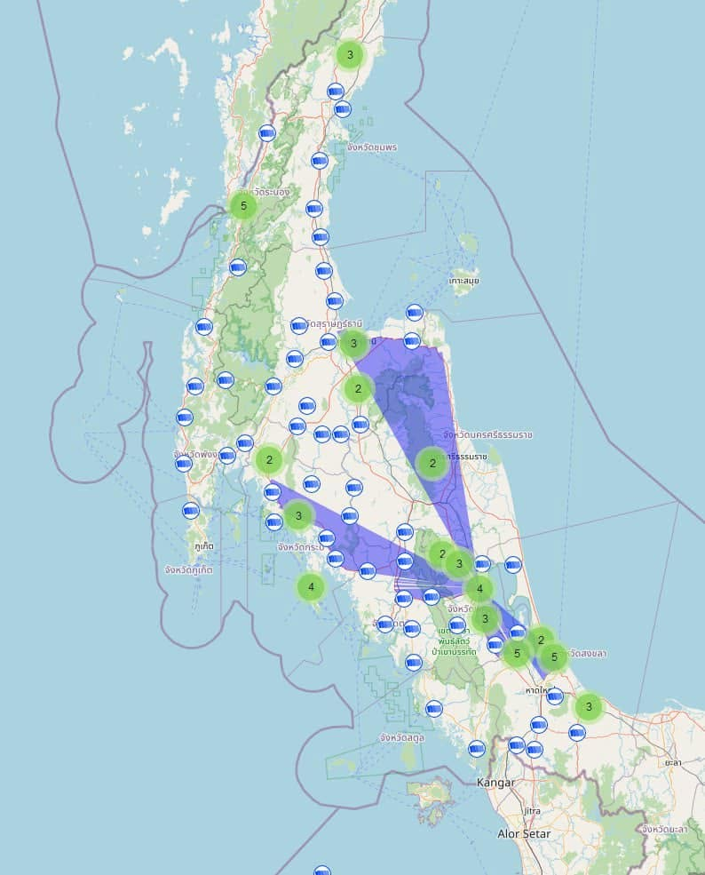

01 / LoRaWAN
The People's Network Project
Build and run a free, decentralized LoRaWAN backbone across Southern Thailand and Northern Malaysia. Gateways, RF planning, and network server setup so sensors can talk without depending on public cellular.
- ScopeNetwork layout, multi-site gateway install, RF planning, operator handoff
- ImpactLive coverage for farms, environment sensors, and city IoT nodes
- StackLoRaWAN, mesh, edge gateways, open network servers, remote management